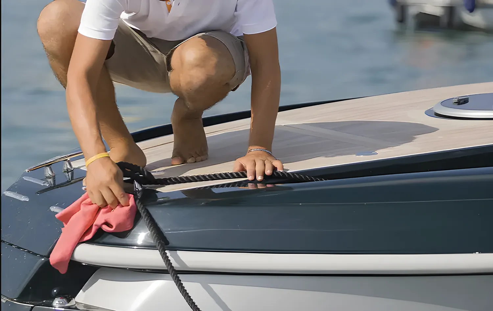

Nettoyage et entretien du bateau
Voiliers et bateaux à moteur jusqu'à 30 mètres, à flot ou à sec. Vous décidez : intérieur seul, extérieur seul, ou tout.
Ce que nous faisons
Chaque intervention est sur mesure : dites-nous ce qu'il vous faut et nous préparons le devis.
Extérieur
- Pont et cockpit
- Gel coat et fibre de verre
- Hublots et vitrages
- Lustrage
- Décapage
Intérieur
- Cabines, carré, cuisine
- Sanitaires
- Aération et rangement à bord
Autres services
- Lavage d'annexes
- Petit entretien
- Hivernage des voiles
- Nettoyage après chantier
Nous ne nettoyons pas la quille sous l'eau. Pour le reste, nous travaillons à flot comme à sec.

Produits
Nous n'utilisons que des produits écologiques. Deux gammes au choix.
Gamme classique
Produits écologiques pour l'entretien courant, à un coût plus contenu.
Nanotechnologie · recommandée
Plus chère et plus efficace : la surface reste protégée plus longtemps et se salit moins vite. C'est la gamme que nous recommandons.
Où nous intervenons
Nord de la Sardaigne. Nous desservons les principaux ports et marinas de la côte.
- Porto Torres
- Alghero et Fertilia
- Bosa
- Cannigione
- Costa Smeralda
- Portisco
- Olbia
- San Teodoro
Le déplacement est facturé à part et toujours indiqué dans le devis. Pour un port hors de cette liste, demandez.
Comment obtenir un devis
Nous intervenons sur demande, sans date limite de réservation. Les délais dépendent du modèle du bateau et de son état.
Remplissez le formulaire
Modèle, longueur, port et services souhaités.
Envoyez des photos
Par WhatsApp, pour que nous voyions tout de suite l'état du bateau.
Recevez le devis
Avec les services choisis, la gamme de produits et le déplacement.
Fixons la date
Nous convenons d'un jour et nous montons à bord.